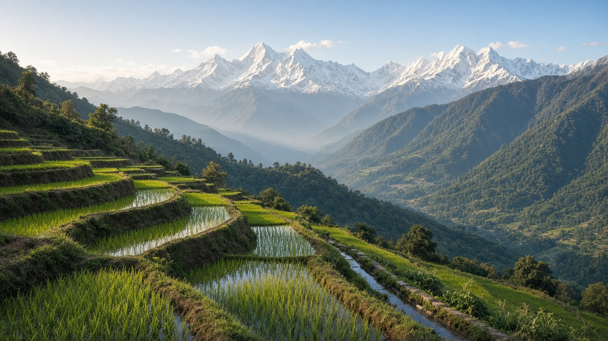
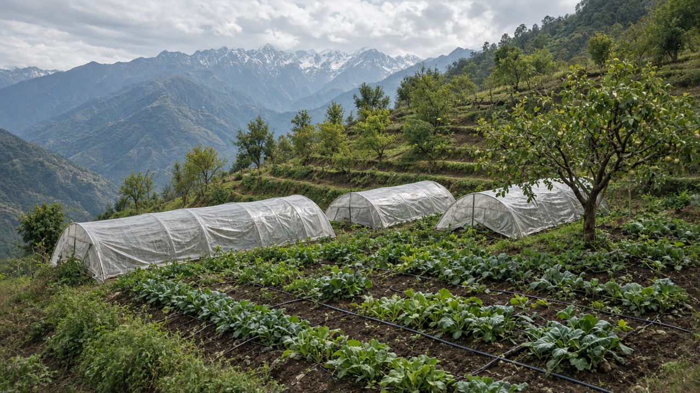
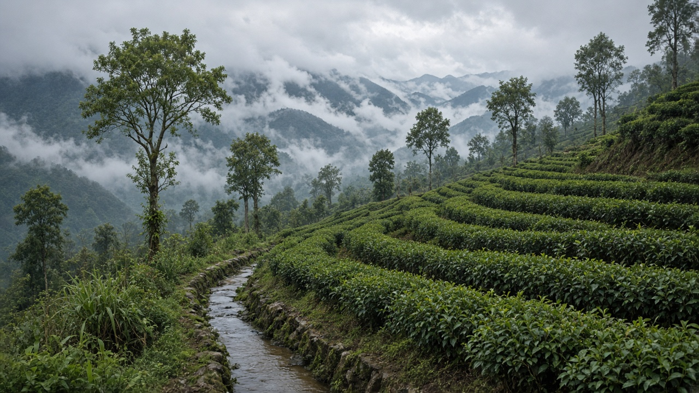

Sustainable Agriculture in Nepal
Published on August 20, 2026

Nepal's diverse topography—from Terai plains to mid-hills and high Himalayas—creates distinct farming systems that must balance productivity with fragile slopes, water scarcity, and climate vulnerability. Most farmers are smallholders cultivating rice, maize, wheat, millet, and vegetables on terraced fields passed down through generations. Traditional practices such as mixed cropping, farmyard manure, community-managed irrigation, and indigenous seed varieties offer foundations for sustainable intensification. Yet rising input costs, youth outmigration, and extreme weather events threaten food security and rural livelihoods across the country.
Government programs, NGOs, and cooperatives promote organic certification in hill districts, plastic tunnel vegetable production, and micro-irrigation technologies suited to water-stressed areas. Agroforestry on sloping land reduces erosion while providing fodder, fruit, and timber. Farmer field schools share integrated pest management and composting techniques in local languages. Market access remains a challenge; improved rural roads, collection centers, and mobile-based price information help producers capture fair value. Climate adaptation projects introduce drought-tolerant seeds and early-warning systems for floods and landslides.
Policy alignment with Sustainable Development Goals and national food-security plans can scale successful pilots into nationwide extension networks. Investing in women's farmer groups, youth entrepreneurship, and local food processing adds value without excessive chemical dependence. Tourism-linked farm stays and specialty exports such as orthodox tea, ginger, and cardamom showcase Nepal's potential for high-quality sustainable products. Community seed networks preserve local maize and rice landraces adapted to monsoon timing, while farmer cooperatives bulk-purchase compost and bio-pesticides to lower costs for members on marginal land. By blending ancestral knowledge with modern ecological science, Nepal can build resilient food systems that nourish its people and protect the mountains, rivers, and biodiversity that define the nation.

नेपालको विविध भौगोलिक स्थिति—तराई, मधेस र हिमाल—ले उत्पादकता र कमजोर ढलान, पानी अभाव र जलवायु जोखिम बीच सन्तुलन गर्ने भिन्न कृषि प्रणाली बनाउँछ। अधिकांश किसान साना खेत मालिक हुन् जसले धान, मकै, गहुँ, कोदो र तरकारी पोखरी खेतमा उत्पादन गर्छन्। परम्परागत मिश्रित बाली, गोठबाट प्राप्त मल, सामुदायिक सिँचाइ र स्वदेशी बीउ दिगो तीव्रीकरणको आधार हुन्छ। तर बढ्दो सामग्री खर्च, युवा विदेश प्रस्थान र चरम मौसमले खाद्य सुरक्षा र ग्रामीण जीविका जोखिममा पार्छ।
सरकार, गैरसरकारी संस्था र सहकारीले पहाडी जिल्लामा जैविक प्रमाणीकरण, प्लास्टिक सुरंग तरकारी र पानी-कम क्षेत्र अनुकूल सूक्ष्म सिँचाइ प्रवर्द्धन गर्छन्। ढलानमा कृषि वनले क्षरण कम गरेर चारा, फल र काठ दिन सक्छ। किसान क्षेत्र विद्यालयले स्थानीय भाषामा एकीकृत कीरा व्यवस्थापन (IPM) र कम्पोस्ट प्रविधि साझा गर्छ। बजार पहुँच चुनौती हो; सडक, संग्रह केन्द्र र मोबाइल मूल्य जानकारीले न्यायपूर्ण लाभ दिन्छ। जलवायु अनुकूल कार्यक्रमले खडेरी-सहन बीउ र बाढी-पहिरो पूर्व चेतावनी प्रणाली ल्याउँछ।
दिगो विकास लक्ष्य र राष्ट्रिय खाद्य सुरक्षा योजनासँग मिलेर सफल परीक्षणलाई देशव्यापी विस्तारमा बदल्न सक्छ। महिला किसान समूह, युवा उद्यम र स्थानीय प्रशोधनमा लगानीले रासायनमा अधिक निर्भरता बिना मूल्य थप गर्छ। पर्यटन-जोडिएको खेत बसाइ र अर्थोडक्स चिया, अदुवा र अलैंची जस्ता विशेष निर्यातले नेपालको गुणस्तरीय दिगो उत्पादनको समर्थन गर्छ। सामुदायिक बीउ सञ्जालले मनसुन समयानुकूल स्थानीय मकै र धान जात संरक्षण गर्छ, किसान सहकारीले कम्पोस्ट र जैव कीटनाशक थोक खरिद गरेर सीमान्त जमिनका सदस्यको लागत घटाउँछ। पुर्खाको ज्ञान र आधुनिक पारिस्थितिक विज्ञान मिलाएर, नेपालले लचिलो खाद्य प्रणाली बनाउन सक्छ जसले जनतालाई पोषण दिन्छ र देशका पर्वत, नदी र जैविक विविधता संरक्षित गर्छ।

नेपाल की विविध भौगोलिक स्थिति—तराई, पहाड़ी और हिमालय—उत्पादकता और कमजोर ढलान, पानी अभाव और जलवायु जोखिम के बीच संतुलन करने वाली अलग कृषि प्रणाली बनाती है। अधिकांश किसान छोटे खेत मालिक हैं जो धान, मक्का, गेहूँ, बाजरा और सब्ज़ियाँ सीढ़ीदार खेतों में उत्पादन करते हैं। पारंपरिक मिश्रित फसल, गोठ से प्राप्त खाद, सामुदायिक सिंचाई और देसी बीज दिगो तीव्रीकरण की नींव हैं। पर बढ़ता सामग्री खर्च, युवा विदेश प्रस्थान और चरम मौसम खाद्य सुरक्षा और ग्रामीण जीविका को जोखिम में डालते हैं।
सरकार, गैरसरकारी संस्थाएँ और सहकारी पहाड़ी जिलों में जैविक प्रमाणीकरण, प्लास्टिक सुरंग सब्ज़ी और पानी-कम क्षेत्र अनुकूल सूक्ष्म सिंचाई प्रोत्साहन देते हैं। ढलान पर कृषि वन क्षरण कम करके चारा, फल और लकड़ी दे सकता है। किसान क्षेत्र विद्यालय स्थानीय भाषा में एकीकृत कीट प्रबंधन (IPM) और खाद विधि साझा करते हैं। बाज़ार पहुँच चुनौती है; सड़क, संग्रह केंद्र और मोबाइल मूल्य जानकारी न्यायसंगत लाभ देते हैं। जलवायु अनुकूल कार्यक्रम सूखा-सहन बीज और बाढ़-पहाड़ी पूर्व चेतावनी प्रणाली लाते हैं।
दिगो विकास लक्ष्य और राष्ट्रीय खाद्य सुरक्षा योजना से मिलकर सफल परीक्षण को देशव्यापी विस्तार में बदला जा सकता है। महिला किसान समूह, युवा उद्यम और स्थानीय प्रसंस्करण में निवेश रसायन पर अधिक निर्भरता बिना मूल्य जोड़ता है। पर्यटन-जोड़ित खेत ठहरने और अर्थोडक्स चाय, अदरक और इलायची जैसा विशेष निर्यात नेपाल के गुणवत्तापूर्ण दिगो उत्पादन का समर्थन करते हैं। सामुदायिक बीज नेटवर्क मानसून अनुकूल स्थानीय मक्का और धान किस्मों को संरक्षित करते हैं, किसान सहकारी खाद और जैव कीटनाशक थोक खरीद कर सीमांत ज़मीन के सदस्यों की लागत घटाते हैं। पुरखों का ज्ञान और आधुनिक पारिस्थितिक विज्ञान मिलाकर, नेपाल लचीला खाद्य प्रणाली बना सकता है जो जनता को पोषण दे और देश के पर्वत, नदी और जैव विविधता को सुरक्षित रखे।